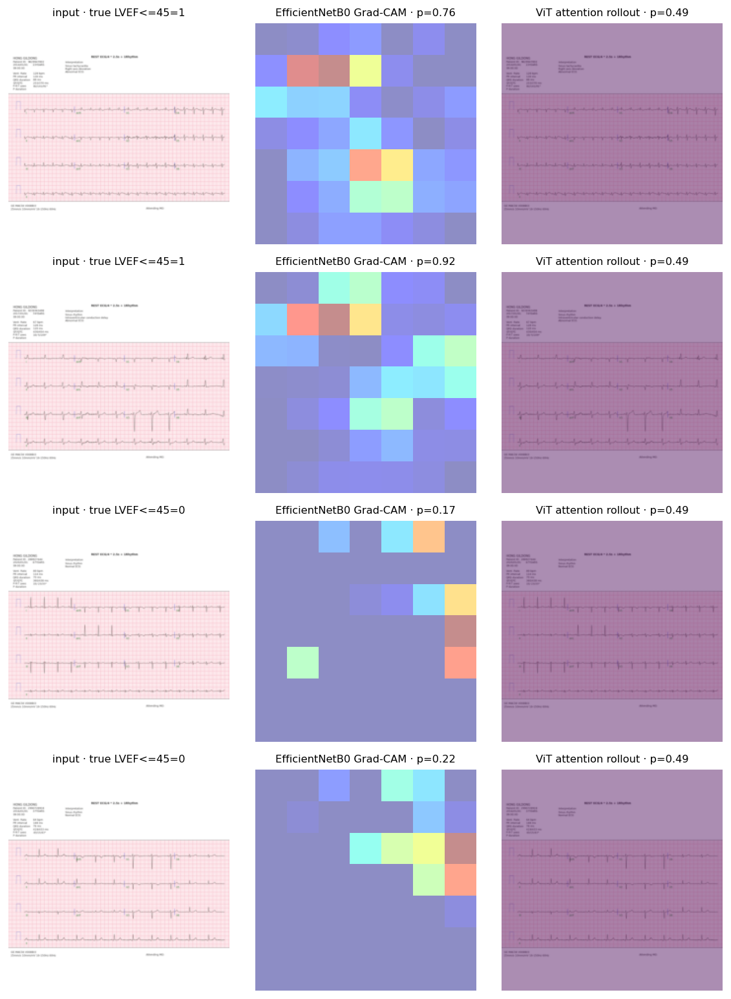
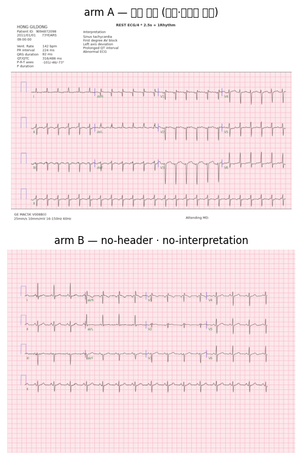
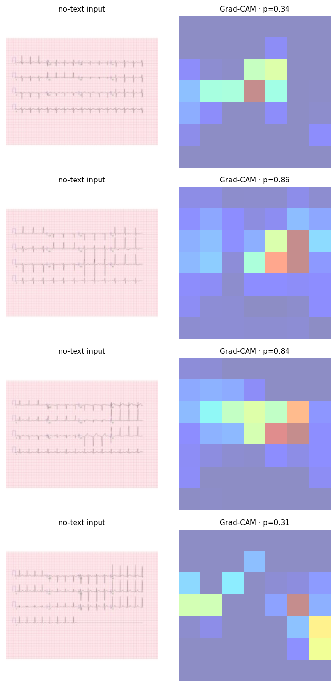
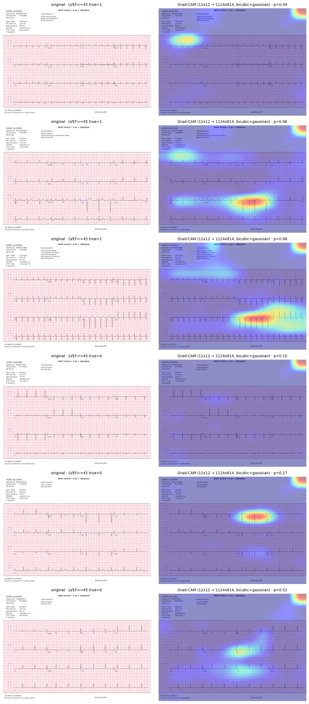
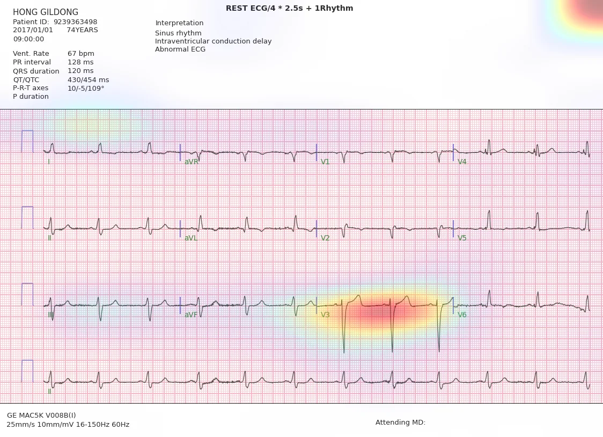

Tab 2 · Web demo
결과지 사진을 넣으면 라벨이 나옵니다
EfficientNetB0(384) ONNX 가중치가 브라우저 안에서 직접 돌아갑니다. 사진은 서버로 전송되지 않습니다.
ECG 결과지 이미지
PNG · JPG · 결과지 전체가 보이게. 끌어놓거나 아래 파일 선택. 모든 계산은 이 브라우저 안에서 끝납니다.
모델 준비 중…
샘플 결과지로 바로 확인:
세 장 모두 학습에서 한 번도 쓰지 않은 환자(그룹 val)입니다. 정답을 함께 표시하니 맞고 틀림을 그대로 보실 수 있습니다.
모델 카드 (배포본)
EfficientNetB0 · 입력 384×384 · 출력 logits(12) + cam(12×12×12) · ONNX 8.0 MB ·
환자 단위 그룹 split(seed 42) · 학습 57,337장 · 그룹 val macro AUROC 0.768 (LVEF 0.835 / test 0.853).
내보내기 검증: 원본 Keras 와 ONNX 의 로짓 최대차 0.036, 160장 표본 macro AUROC Keras 0.8043 vs ONNX 0.8039. int8 동적 양자화는 AUROC 가 0.63 → 0.52 로 무너져 폐기했습니다. 확률은 보정 전 sigmoid 이므로 임상 판단에 쓰지 않습니다.
Baseline 성능 (실측)
n = 57,337 train같은 이미지·같은 split 에서 두 구조를 비교했습니다. 환자 단위 그룹 split 기준이며, 판독문 누수는 제거하지 않은 상태(원본 결과지)입니다.
| 라벨 | EfficientNetB0 | ViT (small) |
|---|---|---|
| LVEF ≤ 45% | 0.818 | 0.478 |
| LVWT ≥ 13 mm | 0.721 | 0.497 |
| AS ≥ moderate | 0.753 | 0.514 |
| AR ≥ moderate | 0.699 | 0.461 |
| MR ≥ moderate | 0.783 | 0.469 |
| TR ≥ moderate | 0.765 | 0.493 |
| PR ≥ moderate | 0.705 | 0.416 |
| RV dysfunction ≥ mod | 0.812 | 0.508 |
| Pericardial effusion | 0.708 | 0.469 |
| PASP ≥ 45 mmHg | 0.718 | 0.512 |
| TR max ≥ 3.2 m/s | 0.716 | 0.534 |
| SHD composite | 0.792 | 0.476 |
| macro AUROC | 0.749 | 0.485 |
| 라벨 | EfficientNetB0 | ViT (small) |
|---|---|---|
| LVEF ≤ 45% | 0.600 | 0.601 |
| LVWT ≥ 13 mm | 0.601 | 0.519 |
| AS ≥ moderate | 0.648 | 0.590 |
| AR ≥ moderate | 0.555 | 0.508 |
| MR ≥ moderate | 0.603 | 0.549 |
| TR ≥ moderate | 0.614 | 0.563 |
| PR ≥ moderate | 0.420 | 0.432 |
| RV dysfunction ≥ mod | 0.616 | 0.565 |
| Pericardial effusion | 0.512 | 0.562 |
| PASP ≥ 45 mmHg | 0.597 | 0.420 |
| TR max ≥ 3.2 m/s | 0.626 | 0.411 |
| SHD composite | 0.674 | 0.405 |
| macro AUROC | 0.589 | 0.510 |
읽는 법 — 누수와 일반화
같은 EfficientNetB0 의 macro AUROC 는 그룹 val 0.749, 기존 val 중 학습에서 본 환자 0.835, 못 본 환자 0.775 입니다. 차이 +0.086 가 곧 환자 누수로 부풀려지는 양입니다 — 기존 split 을 그대로 썼다면 이만큼 높은 숫자를 보고했을 것입니다.
반대로 학습에 전혀 쓰지 않은 no_split 8,000장에서는 0.589 로 떨어집니다.
누수로 설명되지 않는 낙폭이라, 이 부분집합의 코호트·시대·검사 적응증 차이를 먼저 확인해야 합니다.
ViT(small) 는 2.86M params · 6 epoch 로 학습해 macro 0.485 — 사실상 학습되지 않았습니다. 구조 비교로 쓰려면 사전학습 가중치나 더 긴 스케줄이 필요합니다.
설명 가능성
EfficientNetB0 는 마지막 conv feature 에 대한 gradient 로 Grad-CAM 을, ViT 는 레이어별 attention 을 residual 보정해 곱한 attention rollout 을 씁니다. 두 지도가 겹치는 영역이 파형인지 인쇄 텍스트인지가 이 프로젝트의 핵심 점검 항목입니다.
실측 관찰: EfficientNetB0 의 Grad-CAM 은 파형보다 좌상단 환자·측정값 블록과 판독문 줄에 질량이 몰립니다. LVEF 를 맞히는 데 파형보다 인쇄 텍스트를 쓰고 있을 가능성이 높다는 뜻이고, 헤더·판독문을 끈 ablation 렌더가 다음 필수 단계인 이유입니다.

판독문 누수 통제 실험
16,000 train · 4,000 val같은 20,000행을 두 번 학습했습니다. 모델·스케줄·증강·손실은 동일하고, 한 쪽만
--no-header --no-interpretation 로 다시 렌더해 인쇄 텍스트만 제거했습니다.
| 라벨 | A | B | Δ |
|---|---|---|---|
| PR ≥ moderate | 0.757 | 0.690 | -0.067 |
| MR ≥ moderate | 0.783 | 0.745 | -0.037 |
| LVEF ≤ 45% | 0.801 | 0.764 | -0.037 |
| SHD composite | 0.784 | 0.755 | -0.029 |
| LVWT ≥ 13 mm | 0.718 | 0.690 | -0.028 |
| RV dysfunction ≥ mod | 0.804 | 0.783 | -0.022 |
| TR ≥ moderate | 0.744 | 0.723 | -0.020 |
| PASP ≥ 45 mmHg | 0.689 | 0.678 | -0.010 |
| Pericardial effusion | 0.735 | 0.727 | -0.008 |
| TR max ≥ 3.2 m/s | 0.673 | 0.678 | +0.005 |
| AS ≥ moderate | 0.654 | 0.669 | +0.015 |
| AR ≥ moderate | 0.514 | 0.597 | +0.083 |
| macro | 0.721 | 0.708 | -0.013 |
결론: 인쇄 텍스트의 기여는 작습니다. macro AUROC 차이 -0.013. 가장 크게 떨어진 라벨은 PR ≥ moderate(−0.067)와 LVEF(−0.037)이고, AR·AS 는 오히려 올랐습니다 (val 4,000장 기준이라 노이즈가 큽니다). 즉 이 데이터에서 성능의 대부분은 파형에서 나옵니다.
Grad-CAM 이 헤더에 몰렸던 것은 “글자를 읽는다”기보다, 헤더·측정값 블록이 결과지 상단에서 유일하게 고주파 디테일이 있는 영역이라 주의가 쏠린 것으로 해석하는 편이 맞습니다. 텍스트를 없앤 arm B 의 Grad-CAM 은 파형 중앙부로 이동했습니다.


해상도 실험 224 → 384
같은 행 · 같은 스케줄파형의 미세 진폭과 QRS 폭이 정보라면 해상도를 올릴 때 성능이 올라야 합니다. 같은 그룹 split·같은 6 epoch·같은 손실에서 입력 크기만 384 로 바꿨습니다.
| 평가 집합 | 224 | 384 | Δ |
|---|---|---|---|
| 그룹 val | 0.749 | 0.768 | +0.019 |
| 그룹 test | 0.742 | 0.763 | +0.021 |
| 기존 val · 본 환자 | 0.835 | 0.828 | -0.007 |
| 기존 val · 못 본 환자 | 0.775 | 0.785 | +0.010 |
| no_split 외부 | 0.589 | 0.556 | -0.033 |
해상도는 실제 레버였습니다. 그룹 val macro 0.749 → 0.768 (+0.019), 그룹 test 0.742 → 0.763 (+0.021). 두 집합이 같이 올라 우연이 아닙니다.
LVEF ≤ 45% 는 그룹 test 0.853 — 전략 문서의 목표(0.85)를 넘었습니다(val 0.835). SHD 도 0.806 으로 목표(0.80)를 넘겼습니다.
반면 no_split 외부는 0.589 → 0.556 으로 더 나빠졌습니다. 해상도로 설명되지 않는 분포 문제가 남아 있다는 뜻이고, 다음 과제는 모델이 아니라 이 부분집합의 정체 규명입니다.
| 라벨 | 224 val | 384 val | 384 test | Δ val |
|---|---|---|---|---|
| PR ≥ moderate | 0.705 | 0.763 | 0.760 | +0.057 |
| AS ≥ moderate | 0.753 | 0.792 | 0.807 | +0.038 |
| Pericardial effusion | 0.708 | 0.734 | 0.678 | +0.026 |
| LVEF ≤ 45% | 0.818 | 0.836 | 0.853 | +0.018 |
| LVWT ≥ 13 mm | 0.721 | 0.738 | 0.731 | +0.017 |
| RV dysfunction ≥ mod | 0.812 | 0.828 | 0.816 | +0.016 |
| SHD composite | 0.792 | 0.806 | 0.804 | +0.015 |
| AR ≥ moderate | 0.699 | 0.711 | 0.653 | +0.012 |
| TR ≥ moderate | 0.765 | 0.774 | 0.767 | +0.009 |
| MR ≥ moderate | 0.783 | 0.790 | 0.797 | +0.007 |
| PASP ≥ 45 mmHg | 0.718 | 0.723 | 0.734 | +0.005 |
| TR max ≥ 3.2 m/s | 0.716 | 0.720 | 0.752 | +0.005 |
주의: 해상도를 올리면 배치를 128 → 64 로 줄여야 해서 학습 동역학이 완전히 같지는 않습니다. ±0.01 수준 차이는 이 때문일 수 있습니다. 누수 지표(본 환자 − 못 본 환자)는 0.060 으로 224(0.086)보다 줄었습니다.
원본 해상도 Grad-CAM overlay
12×12 → 1124×814feature map 은 12×12 입니다. 그대로 늘리면 계단이 생기므로 bicubic 업샘플 + Gaussian 평활로 원본 결과지 해상도까지 올린 뒤 얹었습니다. 위치 정밀도는 격자 한 칸(≈ 원본 94 px)이므로 픽셀 단위가 아니라 “어느 영역을 보는가”의 지도로 읽어야 합니다.


읽히는 것: 열점이 상단 헤더가 아니라 파형 구간(주로 V1–V3 행과 리듬 스트립)에 걸립니다. 판독문 제거 ablation(Δ −0.013)과 같은 방향의 증거입니다.
주의할 것: 여섯 장 모두 오른쪽 위 모서리에 같은 열점이 남습니다. 특정 환자의 특징이 아니라 경계·여백에서 나오는 아티팩트로 보이므로, Grad-CAM 을 임상 해석에 쓰려면 이 성분을 먼저 제거해야 합니다. (헤더 마스킹 + 사진 증강으로 재학습한 가중치에서 이 열점이 줄어드는지가 다음 확인 항목입니다.)
한계: CAM 은 12×12 격자라 “파형 전체 vs 헤더” 수준의 판단만 가능합니다. 더 정밀한 설명이 필요하면 768 입력 재학습이나 입력 해상도에서 직접 계산하는 occlusion·Score-CAM 이 필요합니다.
배포 계획
- 가중치 — EfficientNetB0(384)를 ONNX 로 내보내
logits(12) +cam(12×12×12) 두 출력으로 고정. fp32 16 MB 단일 파일입니다(int8 4 MB 는 AUROC 가 0.63 → 0.54 로 무너져 폐기). - 브라우저 — onnxruntime-web(WASM)으로 이미지 전처리·추론을 모두 클라이언트에서 수행. 사진은 서버로 보내지 않습니다(개인정보·비용 모두 회피).
- PC 앱 — 같은 ONNX 를 데스크톱 런타임으로 감싼 로컬 앱.
- APK — 카메라 촬영 → 결과지 검출·원근 보정 → 동일 추론 파이프라인.
성능이 확인되기 전까지 이 화면은 “입력 확인용”입니다. 확률을 지어내지 않습니다.
사진에서 바로 추론하지 않는 이유
학습 데이터는 정면·무왜곡 렌더입니다. 실제 휴대폰 사진은 기울기·조명·그림자가 다르므로, 그대로 넣으면 성능이 급락합니다. 그래서 두 단계를 나눕니다.
- 문서 검출 + 원근 변환으로 결과지 영역을 정면화
- 회색조·대비 정규화 후 224×224 로 축소
- 학습 시에도 회전·원근·조명 증강을 넣어 이 간극을 미리 메움